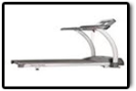

Cardio
Is a physical exercise of relatively low intensity that depends on the aerobic energy-generating process. Aerobic literally means "living in air" & refers to use of oxygen to adequately meet energy demands during exercise via-aerobic meta bolism. Generally , light to moderate intensity activities that are sufficiently supported by aerobic can be performed for extended periods of time. The intensity should be between 60% and 85% of heart rate. When practiced in this way, examples
of cardiovascular/aerobic exer-
cise are medium to long distance running/jogging, swimming, cycling, and walking, according to the first extensive research on aerobic exercise, conducted in the 1960s on over 5,000 U.S. Air Force personnel by Dr. Kenneth H. Cooper.
DO's
- Do Pace Yourself Based on How You Feel
- Be Choosey About Your Equipment
- Cool Down Gradually
- Set Appropriate Goals
- Increase Exercise Level Gradually
- Perform a Warm-Up Before Your Workout
- Exercise Regularly Throughout the Week
DONT’s
- Don't Be a Weekend Warrior
- Get Hung Up on Heart Rate
- Skip Your Warm-up
- Perform the Same Workout Everyday
- Overdo It As You Start Your Program
- Go From 0 to 60 in 5 Seconds
- Stop Immediately After a Vigorous Workout
DIET
To minimize your cardiovascular risk, the Mayo Clinic website recommends
- Eating a balanced diet high whole grains, fruits and vegetables.
- Reduce consumption of white bread and starches, focusing instead on whole grain bread, whole wheat pasta, oatmeal, quinoa, barley and flaxseed.
- Replace red meats and fried meat with fish, skinless chicken, soy products, beans and lean meat.
- Eat at least two servings of fruits and two or three servings of vegetables per day.
- Carefully monitor your salt intake and choose low-sodium options when possible.
- Balancing your diet with carbs, healthy fats and protein promotes weight loss and reduces cardiovascular risk.